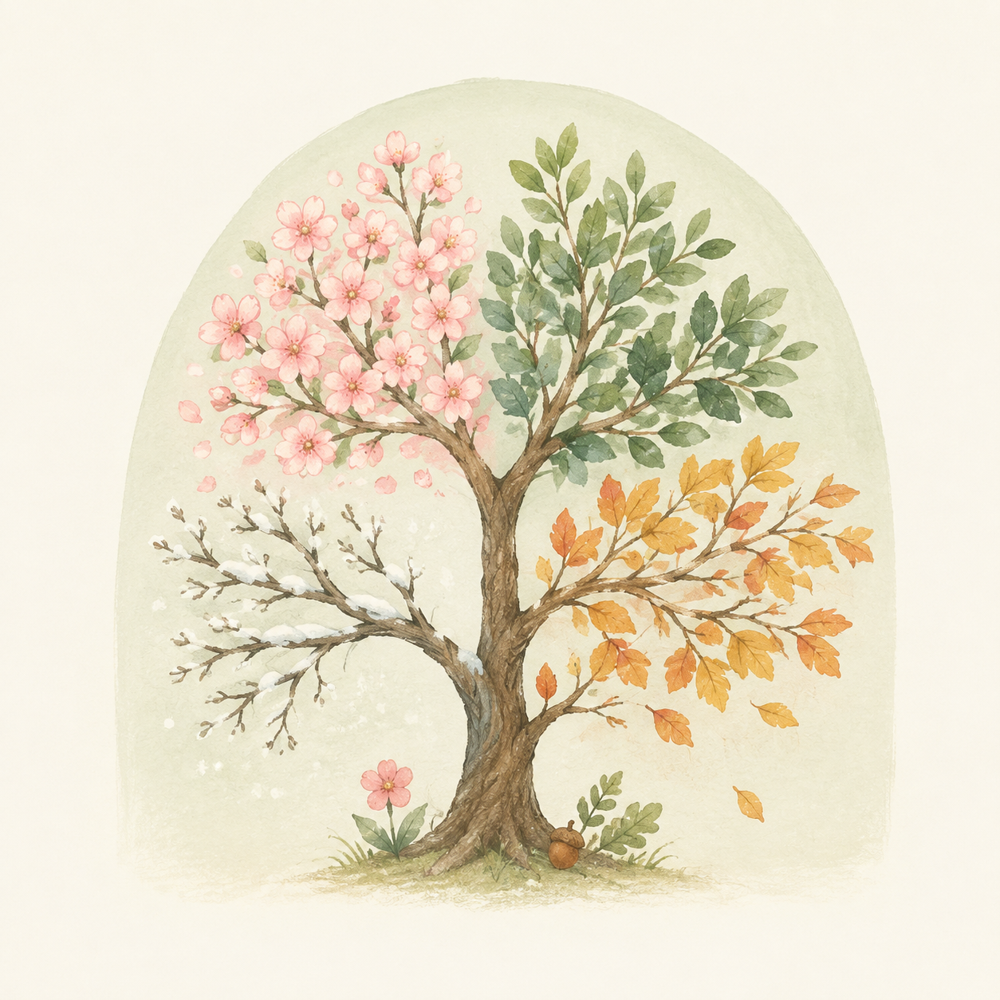

SEASONS
年間行事
四季を通じて、たくさんの思い出をつくります

毎月の誕生会・避難訓練・発育測定のほか、体育教室・おはなしランド・リトミックなどを年間を通じて実施しています
春 — Spring
4
April

- 希望保育
- 入園・進級式
5
May
- こどもの日の集い
- 親子遠足
6
June
- 虫歯予防の集い
- 歯科検診
- マラソン大会
- 時の記念日の集い
- 春季健康診断
- 参観日
夏 — Summer
7
July

- 七夕の日の集い
- 夕涼み会
- 交通安全教室
8
August

- 終業式
- 希望保育（夏季）
- 始業式
9
September

- 秋の運動会の練習
秋 — Autumn
10
October

- 運動会
- 秋の遠足
11
November
- 秋季健康診断
- 交通安全教室
12
December

- 生活発表会
- クリスマス会
- 終業式
- 希望保育（冬季）
冬 — Winter
1
January

- 始業式
2
February
- 節分の日の集い
3
March
- ひなまつりの集い
- お別れ遠足
- 交通安全教室
- お別れ会
- 卒園式
- 1日入園
- 修了式